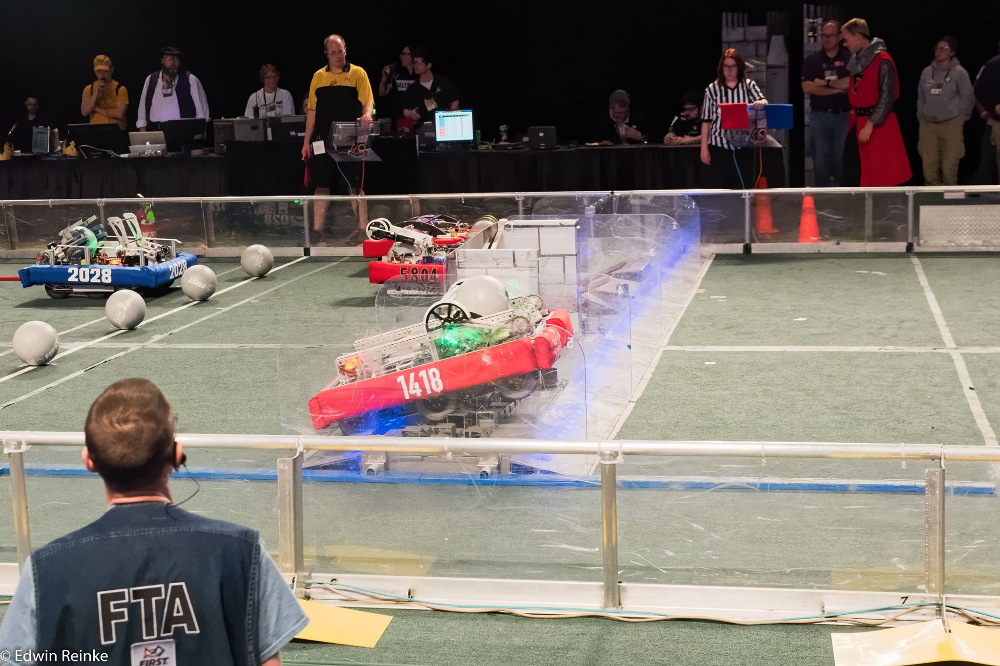
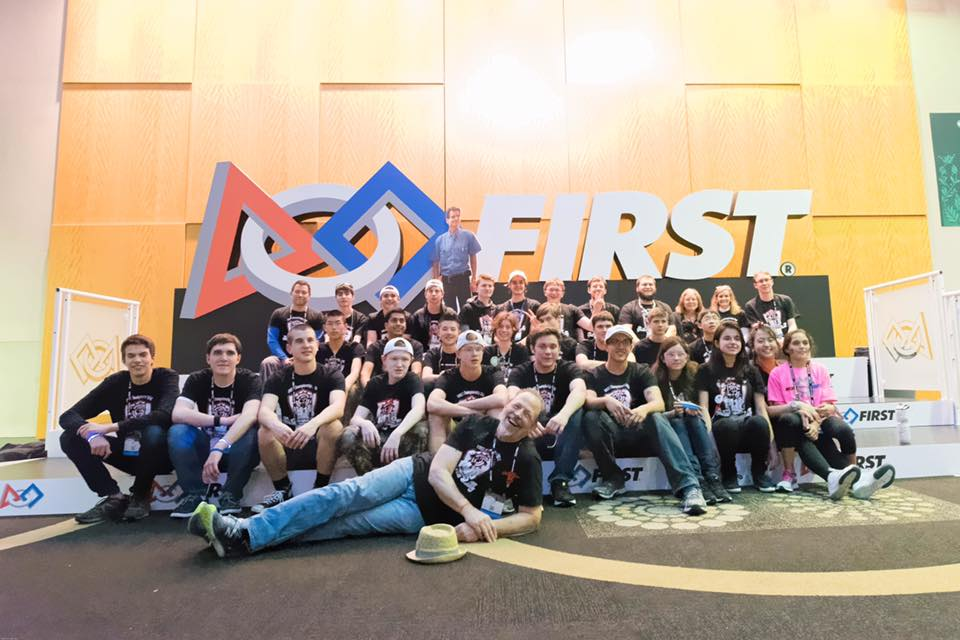

The 2016 Robot
The 2016 FIRST challenge is called FIRST Stronghold. The challenge involves crossing a variable series of defenses, scoring balls into low and high goals, and lifting the robot several feet into the air. For a more detailed description, see the official video reveal.
In the 2016 season, we made it further than ever before, taking first place in the Greater DC District competition, the Bethesda District Competition, and the FIRST Chesapeake district championship, qualifying us for the St. Louis World championship. After a hard fight at Worlds, we made it to the division semifinals in the 2016 Newton Division, widely believed to have been the strongest group of teams in FIRST history.
Team 1418 was recognized as part of the top 1% of teams out of the 3,128 active at the time, as well as the best team in Virginia, Maryland, Delaware, West Virginia, and Washington, DC.
You can view our team’s more detailed results on The Blue Alliance.
Autonomous Modes
Modular Autonomous
The pride and joy of the programming team, Modular Autonomous, is out. Using our touchscreen UI, we input the robot's position, our allies, and the defenses on the field, and the robot automatically builds a custom autonomous for any one of the tens of thousands of combinations the field this year can offer.
Using Modular autonomous we get can get up to 15 points from any position, ten for crossing a defense and five for scoring a low goal.
Low Bar
Low Bar is a simple high-scoring autonomous that quickly goes over the low bar and shoots. Using Low Bar we get 15 points, ten for crossing a defense and five for scoring a low goal.
Direct Portcullis:
Direct Portcullis gets us 10 points by crossing the Portcullis defense using our custom-built arm.
Direct Cheval
Direct Cheval gets us 10 points by crossing the cheval de frise defense using our custom-built arms.
Tele-operated Period
This robot is an offensive powerhouse: in one early round, we defeated an alliance of three bots all by ourselves when our alliance partners couldn't join the game. We can breach every defense on our own using our pneumatic tires in order to cross most terrain, our arms to manipulate the more complex defenses, and our small frame to fit anywhere we need to.
We are also able to shoot into the low goal using our arm, scoring extra points and bringing down the tower, working with our team to capture it.
Lastly, we have a scissor lift on the back our robot that allows us to climb the tower, completing one third of the challenge as well as scoring us an extra 15 points at the end of the match.
Robot Abilities
The Scissor-Lift
Our Scissor lift is our trademark, giving us the 15 extra climbing points and challenging points to give us the competitive edge in any match. It extends from 9 inches to 5 feet 9 inches, and is able to climb in as little as 6 seconds, and its remarkable consistency helped us get as far as we did.
Custom-Made ArmOur custom arm is the most versatile part of the robot, allowing us to breach the portcullis and the cheval defenses, as well as letting us score into the low goal, bringing down tower health.
6 8" Pneumatic Wheel Drive Train
Our Pneumatic wheels allow us to cross every defense with minimal wear-and-tear to our robot, as well as giving us excellent speed, maneuverability, and traction.
Small Lightweight Frame
Our frame is specially designed to be as small as possible, allowing it to go under the low bar and fit in tight spaces, as well as being light enough for maneuverability and speed. However, our frame's best feature is its sturdiness and durability, resisting wear and tear, and keeping us on the field and out of the pits.
Programming
This year, our team wanted to program in a language that was easy to use, but would allow us to have total control over the robot at any given time. Because our programming mentor Dustin Spicuzza has worked with Python in the past and is very knowledgeable about implementing it with FRC, we settled with Python.
Robot code:
Our robot code uses “magic robot”, a part of the RobotPy library that makes using objects between classes easy. It is object-oriented, and controls our arm using custom PID control.
User Interface
In addition to our robot code, team members Erik Boesen and Leon Tan designed a UI for our touchscreen driver station. It is written in JavaScript/HTML/CSS, and communicates with the robot through a python-based tornado server.
Member Erik Boesen then simplified, cleaned up, and rereleased the UI as FRC Dashboard, a more easily-customizable and repurposable version of the UI.
All our code can be found on our GitHub organization.
